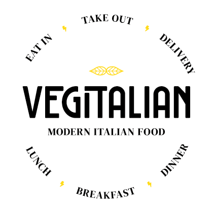
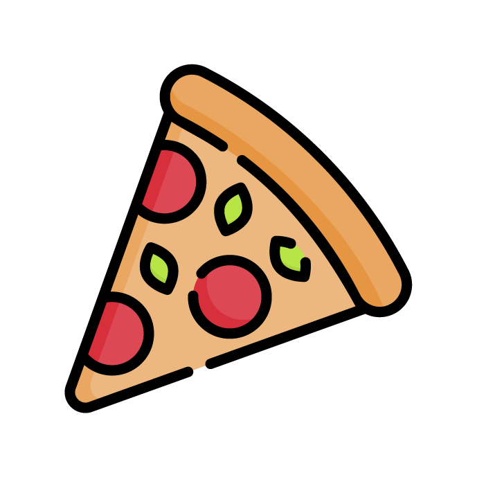
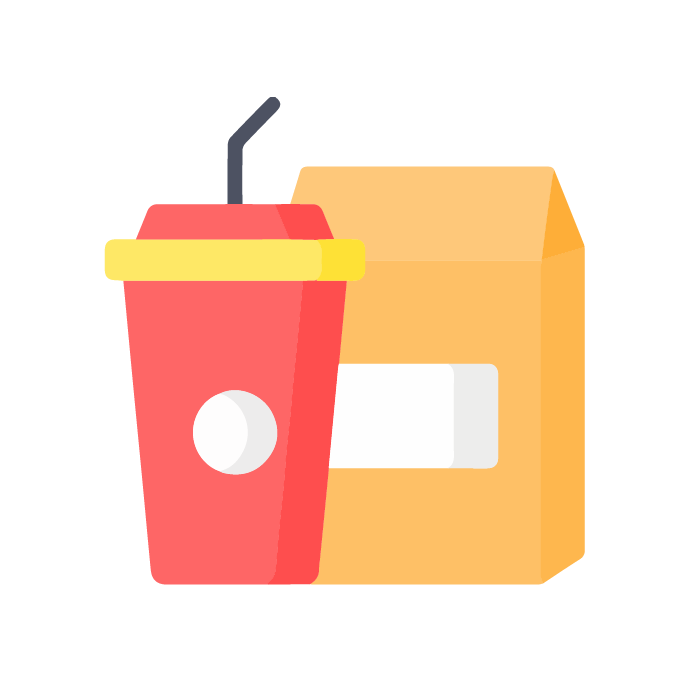
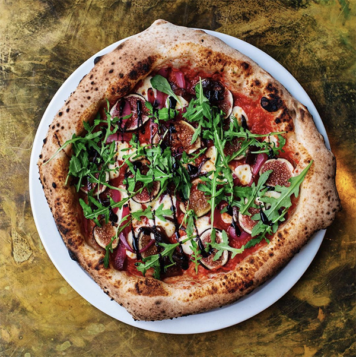
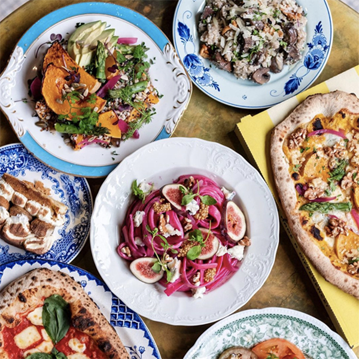
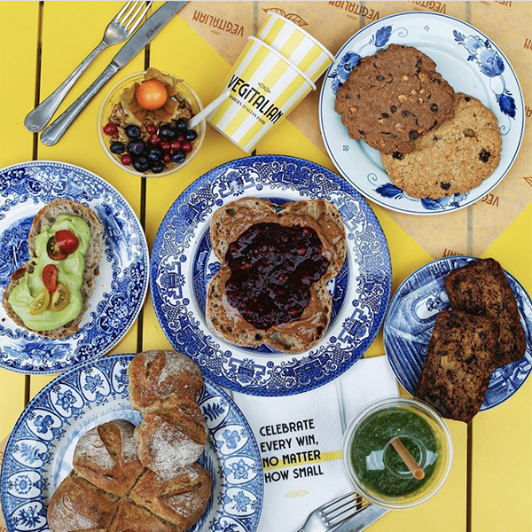
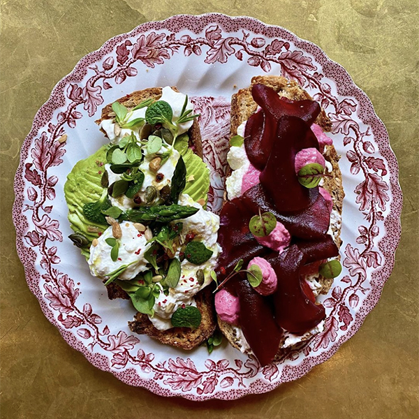

- 
Today's conscious choices sprinkled over all the goodness of the rich italian kitchen
We made our modern Italian kitchen a place to suit all tastes. A place to eat consciously without concessions; on flavor, quality and experience. How? By using the Italian kitchen as a proud source of inspiration -not as a limitation!- to create a whole new experience of plant-based and vegetarian food.
Could you say ‘ciao’ to that?
The modern kitchen
Caring for a healthier, happier planet while taking you on a tasteful journey of modern food; a modern kitchen is not only defined by its dishes, but even more so by its story.
Take away and delivery
Having little time doesn’t mean your meals should suffer. A sweet breakfast on the go, a healthy salad that perfectly fits in your break or a we-don’t-leave-the-house-tonight pizza at your front door. We got you covered. For all of your big cravings and your sweet appetite.

Join our team

We are looking for the best riders and pizzaioli/pizzaiole! Want to work with the best people and ingredients? In a central location in Utrecht?
- 
- 
- 
- 
Where to find us
Schoutenstraat 17, Utrecht